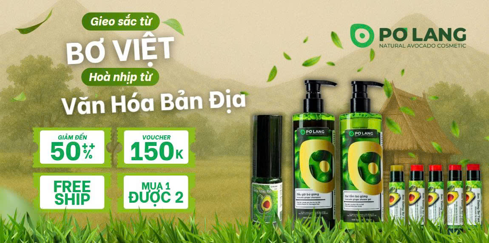

Về Pơ Lang

GĐ1
Pơ Lang - Hơn Cả Mỹ Phẩm, Đó Là Tình Yêu
Pơ Lang mang vẻ đẹp mộc mạc của Tây Nguyên đến làn da Việt với tình yêu...
Ngày đăng: 10/03/2026

GĐ1
Khi Vẻ Đẹp Thuần Khiết Hòa Quyện Cùng Di Sản Văn Hóa
Pơ Lang nâng tầm trái bơ Việt, lan tỏa văn hóa Tây Nguyên bền vững...
Ngày đăng: 15/05/2026

GĐ1
Tây Nguyên - Cội Nguồn Diệu Kỳ và Sứ Mệnh Gìn Giữ Văn Hóa
Pơ Lang tôn vinh văn hóa Tây Nguyên và trái bơ Đắk Lắk, lan tỏa vẻ đẹp bền vững...
Ngày đăng: 28/05/2026

GĐ3
Tự Hào Có Mặt Trên Shopee Global, Lan Tỏa Niềm Tự Hào Nông Sản Việt
Pơ Lang mang trái bơ Tây Nguyên và văn hóa Việt Nam vươn ra thế giới...
Ngày đăng: 17/07/2026

GĐ3
Pơ Lang Cùng Bạn Kiến Tạo Vẻ Đẹp Có Trách Nhiệm
Pơ Lang mang mỹ phẩm thiên nhiên và lối sống xanh, tôn vinh văn hóa Tây Nguyên...
Ngày đăng: 11/08/2026

GĐ3
Bí Mật "Thần Dược" Từ Bơ Tây Nguyên: Hành Trình Khởi Nghiệp
Pơ Lang biến bơ 'không hoàn hảo' thành mỹ phẩm thiên nhiên đầy cảm hứng...
Ngày đăng: 01/08/2026